ФОРМУЛИ ПОВНОЇ ІМОВІРНОСТІ ТА БЕЙЕСА.
Імовірність події А, яка наступає лише при появі однієї з несумісних подій (гіпотез)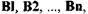що утворюють повну групу подій, рівні сумі добу гни»
ймовірностей кожної з гіпотез на відповідну умовну імовірність події А, тобто
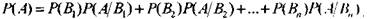
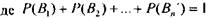
Цю формулу називають "формулою повної імовірності".
Нехай подія А наступає, лише при умові появи однієї з несумісній ницій (гіпотез)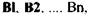що утворюють повну групу подій Якщо моїми Л юне
наступила, то імовірність гіпотез можна оціниш за формулою Бейса
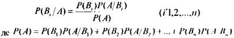
ПРИКЛАД: Дві автоматизовані системи виробляють одішконі ясним, які надходять на загальний конвеєр. Продуктивність першої автоматизованої стеми в два рази вища продуктивності другої. Перша системи виробляє в середньому 80% деталей найвищої якості, а друга - 70%
1)Визначити імовірність того, що перша-ліпша взята в конвеєрі темпи, буде найвищої якості;
2)Перша-ліпша деталь, що взята з конвеєра виявиться найвищої якості. Знати імовірність гою, що ця деталь вироблена першою автоматизованою системою.
РОЗВ'ЯЗОК: Позначимо А - взята деталь найвищої якості відносно будь-якої деталі можна сказати, що В1- деталі, вироблені 1ю автоматизованою системою,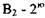автоматизованою системою
Оскільки перша система виробляє вдвічі більше деталей ніж друга, то
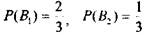
Умовна імовірність того, що деталь буде найвищої якості, якщо кома вироблена першою автоматизованою системою, рівна
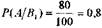
Умовна імовірність того, що деталь буде найвищої якості, якщо попа вироблена другою автоматизованою системою, рівна
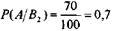
1) Імовірність того, що перша-ліпша взята з конвеєра деталь буде найвищої якості, на основі формули повної імовірності, рівна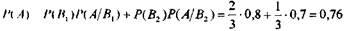
2) імовірність тою, що взята деталь виявиться виробленою першим автомаїом, ти формулою Бейеса рівна:
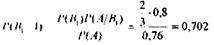